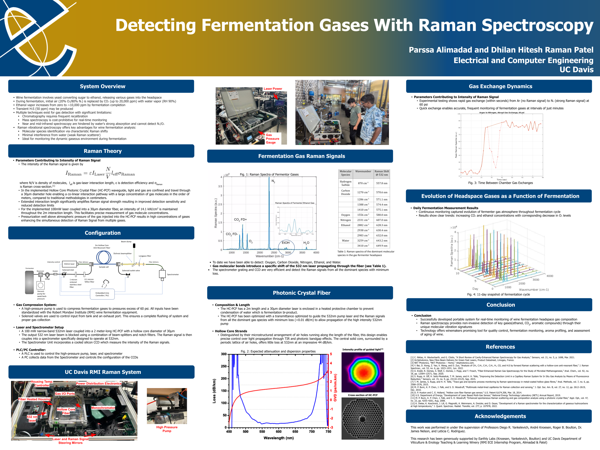

Professional Experience
Applications Electrical Engineer_
Texas Instruments (Embedded Processing)
Jun. 2025 - Sep. 2025
» Designed and implemented 8-layer mixed-signal TEM cell PCB on Altium Designer for TI’s audio processing
microcontrollers (AM275), optimized for rigorous EMI compliance testing
» Produced detailed electrical & logic schematics streamlining mixed-signal PCB layout and fabrication
» Sourced new and replacement components for board design; cross-collaborated with senior engineers on design
shortcomings and implementing improvements
» Ensured stringent design conditions were met; minimizing cross-talk and interference from analog components
Control Systems Electrical Engineering Intern_
UC Davis Robert Mondavi Institute for Wine Research
May. 2024 - present
» Maintaining Integrated Fermentation Controls Systems (IFCS) units in winery lab to track various wine temperatures, Brix, and pumpovers throughout fermentation process
» Working on regulating IFCS power (AC-DC & DC-DC) to LCD, temperature sensors, and water pump
» Implementing efficient instrument calibration to accurately characterize wines sugar content
» Executing Raman Spectroscopy system to characterize concentration of wine's headspace gasses during fermentation using WP-ENLIGHTEN software.
» Planning to add two-way wireless communication for IFCS units with Cypress PSoC, currently data is only received directly from the IFCS units to our control room and sending instructions or data back is not possible.
» Diagnosing faulty control units by performing diagnostic tests

THz Lab Graduate Researcher_
Applied Micro/Nano Electromagnetics Research Laboratory
Sept. 2023 - present
» Researching experiments to investigate novel capabilities of THz frequencies in imaging & characterization
» Calibrating and characterizing optical equipment for measurement laser setup
» Maintaining pump and probe THz time-domain spectroscopy systems
» Troubleshooting crucial dated motor controller & driver systems to facilitate Faraday-Rotation experiment
Graduate Researcher (Sept. 2025 - )
Undergraduate Researcher (Sept. 2023 - Sept. 2025)
Backend Software Dev. Engineer_
Outwork Automation
May. 2022 - Oct. 2022
» Developed data analysis alogrithms for medium-sized machine shops
» Applied Python & Django frameworks to design and optimize non-linear machine output
» Interfaced XML & SQL databases to accurately confer operating cycles of machinery
» Troubleshot incompatibilities with older machinery in collecting data through creative "analog" solutions
Organisational & Leadership Experience:
IEEE at UC Davis Officer_
UC Davis College of Engineering
Nov. 2021 - Sep. 2025
» Advised with planning for public informational IEEE events relevant for our ECE students
» Led an outreach team of 3 illustrating flyers, & posters, managing socials, and spreading the word
» Collaborated with fellow officers in workshops and networking events offered within the organization
» Mentored incoming ECE freshmen with planning their first years, within and outside of IEEE
Competitive Sports Referee & Supervisor_
UC Davis Campus Recreation and Unions
Dec. 2021 - Present
» Supervising and mentoring referees across all IM sports to officiate games
» Acting as a first responder to injuries during IM events, providing immediate assistance
» Refereed and managed 50+ outdoor and indoor IM soccer matches
» Promoted from refereeing official football, futsal & basketball games to supervisor within 6 months